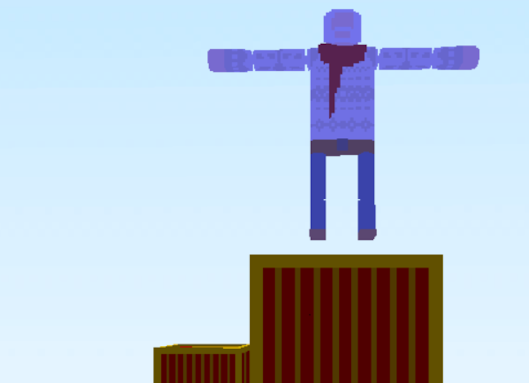
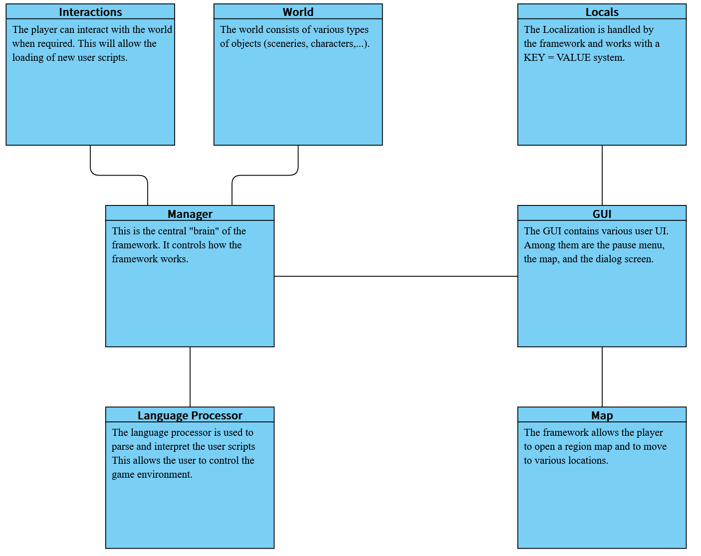
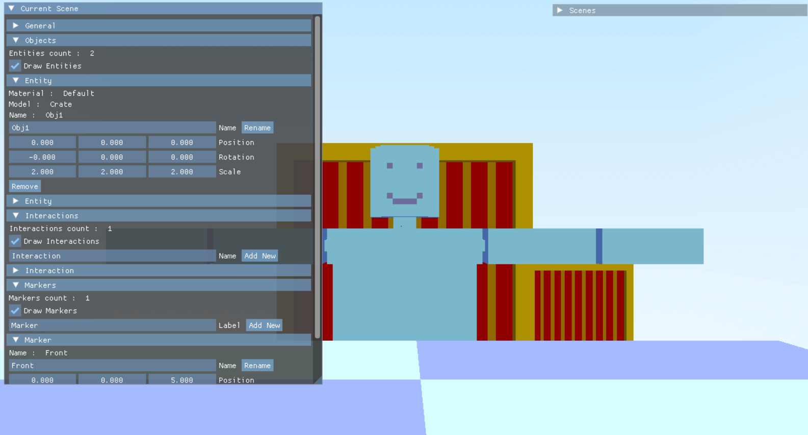

ANE est un moteur de jeu sur lequel je travaille depuis fin 2025.
C'est un moteur de jeu qui reprend le fonctionnement du framework ANF et le retranscrit en C++ / DirectX11.

C++
DirectX11
Moteur de jeu
2025-???
Le moteur est décomposé en plusieurs modules, qui sont responsables de différentes parties du
moteur.
- Le manager est responsable de gérer les autres modules et de s'assurer qu'ils soient bien
synchronisés. Il gère aussi les variables joueurs (nom du joueur, quêtes en cours, ...)
- Le monde est responsable des personnages à l'écran et du décor.
- Intéractions est responsable de la mécanique d'intéraction du moteur.
- Le processeur de script est responsable de la traduction du language de script ANSL en
commandes interprétables par le moteur.
- Le GUI est responsable des différents élements de UI du moteur (menu pause, dialogues,
...).
- La localisation est gérée par le moteur avec un systême fait à la main.
- La carte permet au joueur de se déplacer dans une ou plusieurs cartes. Cela permet d'avoir
une
expérience de jeu moins linéaire et plus ouverte.
ANSL (Adventure Novel Scripting Langguage) est le language de script permettant de créer des jeux
sans
avoir à toucher au moteur.

Schéma des différents modules de ANE
Un editeur de scene, implémenté avec ImGUi, a été ajouté afin de faciliter la création de décor pour
un jeu. Il permet de :
- Visualiser les différentes scenes du projet, en ajouter, et en supprimer.
- Ajouter des élements de décors et de les déplacer.
- Ajouter des points d'intéraction et les lier à des objects de la scene.
- Ajouter des marqueurs et les déplacer. Ils sont utilisé par la suite pour placer des
personnages dans ANSL.

Exemple d'une scene en mode édition. Le personnage représente un marqueur, et le damier en bas de l'écran représente une zone d'intéraction.